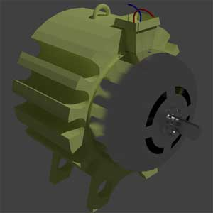
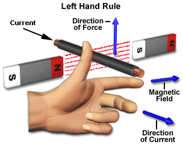
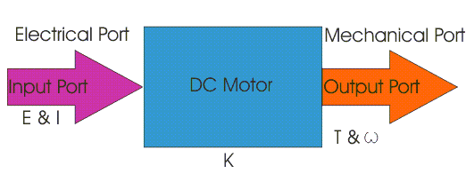
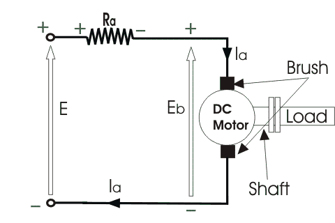
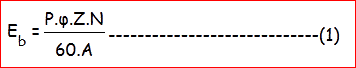
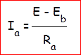
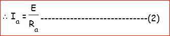

What is DC Motor ?
Electrical motors are everywhere around us. Almost all the electro-mechanical movements we see around us are caused either by an A.C. or a DC motor. Here we will be exploring this kind of motors. This is a device that converts DC electrical energy to a mechanical energy.
Principle of DC Motor
This DC or direct electric current motor works on the principal, when a electric current carrying conductor is placed in a magnetic field, it experiences a torque and has a tendency to move. This is known as motoring action. If the direction of electric current in the wire is reversed, the direction of rotation also reverses. When magnetic field and electric field interact they produce a mechanical force, and based on that the working principle of dc motor established.  The direction of rotation of a this motor is given by Fleming’s left hand rule, which states that if the index finger, middle finger and thumb of your left hand are extended mutually perpendicular to each other and if the index finger represents the direction of magnetic field, middle finger indicates the direction of electric current, then the thumb represents the direction in which force is experienced by the shaft of the dc motor.
Structurally and construction wise a direct electric current motor is exactly similar to a DC generator, but electrically it is just the opposite. Here we unlike a generator we supply electrical energy to the input port and derive mechanical energy from the output port. We can represent it by the block diagram shown below.

Here in a DC motor, the supply voltage E and electric current I is given to the electrical port or the input port and we derive the mechanical output i.e. torque T and speed ω from the mechanical port or output port.
The input and output port variables of the direct electric current motor are related by the parameter K.
So from the picture above we can well understand that motor is just the opposite phenomena of a DC generator, and we can derive both motoring and generating operation from the same machine by simply reversing the ports.
Detailed Description of a DC Motor
To understand the DC motor in details lets consider the diagram below,

The direct electric current motor is represented by the circle in the center, on which is mounted the brushes, where we connect the external terminals, from where supply voltage is given. On the mechanical terminal we have a shaft coming out of the Motor, and connected to the armature, and the armature-shaft is coupled to the mechanical load. On the supply terminals we represent the armature resistance Ra in series. Now, let the input voltage E, is applied across the brushes. Electric electric current which flows through the rotor armature via brushes, in presence of the magnetic field, produces a torque Tg . Due to this torque Tg the dc motor armature rotates. As the armature conductors are carrying currents and the armature rotates inside the stator magnetic field, it also produces an emf Eb in the manner very similar to that of a generator. The generated Emf Eb is directed opposite to the supplied voltage and is known as the back Emf, as it counters the forward voltage.
The back emf like in case of a generator is represented by

Where, P = no of poles
φ = flux per pole
Z= No. of conductors
A = No. of parallel paths
and N is the speed of the DC Motor.
So from the above equation we can see Eb is proportional to speed ‘N’. That is whenever a direct electric current motor rotates, it results in the generation of back Emf. Now lets represent the rotor speed by ω in rad/sec. So Eb is proportional to ω.
So when the speed of the motor is reduced by the application of load, Eb decreases. Thus the voltage difference between supply voltage and back emf increases that means E − Eb increases. Due to this increased voltage difference, armature electric current will increase and therefore torque and hence speed increases. Thus a DC Motor is capable of maintaining the same speed under variable load.
Now armature electric current Ia is represented by

Now at starting,speed ω = 0 so at starting Eb = 0.

Now since the armature winding electrical resistance Ra is small, this motor has a very high starting electric current in the absence of back Emf. As a result we need to use a starter for starting a DC Motor.
Now as the motor continues to rotate, the back Emf starts being generated and gradually the electric current decreases as the motor picks up speed.
 by
by